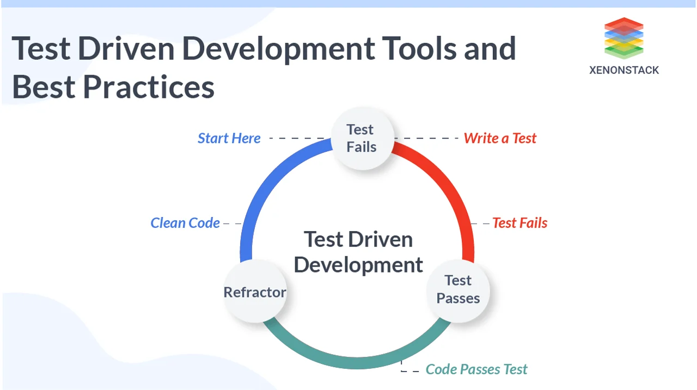

Continuous Test driven Development on tarkvaraarenduse praktika,
mis laiendab Test driven Development automaatsete testide taustal käivitamise kaudu,
mida nimetatakse ka pidevaks testimiseks.

Eelised
Testide kirjutamine enne koodi aitab luua paremat, kiiremat ja usaldusväärsemat tarkvara. See võimaldab vigu varakult avastada, vähendades hilisemat parandustööd.
Kui kood on valmis, annab testikomplekt kindluse, et see töötab ootuspäraselt. Samuti aitab testide olemasolu vältida vigasid tulevastes muudatustes.
Järjepidev testimine kiirendab vigade leidmist ja parandamist ning toimib juhisena uutele tiimiliikmetele, aidates neil kiiremini projektiga kohaneda.
Puudused
Test Driven Development võib võtta palju aega ja aeglustada projekti edenemist. Suurte või keeruliste ülesannete testide kirjutamine on vaevanõudev.
Test Driven Development võib olla liiga jäik, kui on vaja kiiresti muudatusi teha või uusi funktsioone lisada. Liigne testimisele kuluv aeg võib vähendada arendusele pühendatud aega.
Samuti eeldab Test Driven Development head testiautomaatika tundmist, mis võib olla keeruline algajatele. Liigne keskendumine testidele ja reeglitele võib pärssida loovust ja uute ideede tekkimist arendusprotsessis.
Case Vahendi kasutus
Eclipse IDE
Kasutatakse mitmesuguste arvutirakenduste arendamiseks ning ka testimiseks,
kasutades eriti Java keelt ja ka teisi, sealhulgas C/C++, Python, PERL, Ruby ja palju muud